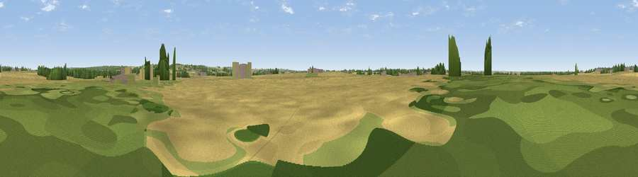

Viewpoint near Scotter
#43457 in England · top 89% of its area beats it · near ScotterWhere it is
The exact computed spot (SE 89830 02070). Click the marker for map links.
The view, rendered

A 360° render of this exact spot computed from the terrain model, tree cover and land cover — summer colours, afternoon light, calibrated against photographs of famous viewpoints. Real trees, hedges and buildings will differ in detail.
The panorama
Grey silhouette: terrain skyline in each direction (720 bearings, Earth curvature and refraction included). Dashed green: skyline with trees (+15 m) and buildings (+8 m) as obstacles. Blue strip: how far the ground is visible on each bearing.
Where the view opens
Wedge length = distance to the farthest visible ground on that bearing (vegetation-aware). Rings at 10, 25 and 50 km.
What fills the view
70% cropland · 17% grassland · 9% woodland · 3% built-up ·
Angular shares of the visible panorama (visual magnitude), not map area. Landscape diversity 0.40 (0–1 Shannon).
Key numbers
More beautiful places nearby
The staircase of upgrades: each row has a higher view potential than everything closer. Driving times are estimates from straight-line distance, calibrated against real road routing — check an actual route before setting out.
| Place | Direction | Drive | Score |
|---|---|---|---|
| Viewpoint near Scotter | S · 1 km | ~4 min | 21.1 |
| Ash Holt | ESE · 4 km | ~10 min | 32.2 |
| Viewpoint near Grayingham | SE · 6 km | ~14 min | 44.8 |
| Tower Hill | W · 14 km | ~25 min | 46.1 |
| Viewpoint near Burton upon Stather | N · 16 km | ~28 min | 53.6 |
| Viewpoint near Burton Stather | N · 18 km | ~31 min | 59.1 |
| Viewpoint near Burton Stather | N · 18 km | ~31 min | 60.6 |
| Beacon Hill | SW · 19 km | ~33 min | 63.1 |
53.50766, -0.64699 · source: osm peak · position refined by local search. Computed location — check access rights before visiting.